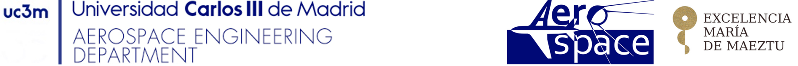
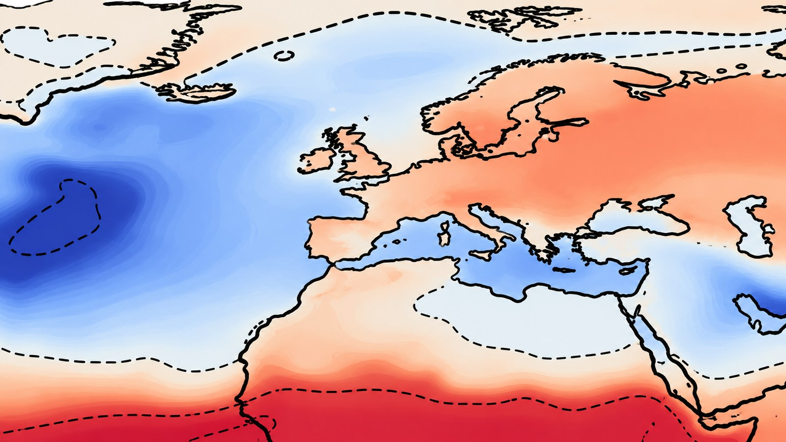

The International Symposium on Flow Visualization provides a forum for presenting and discussing methods that make fluid-flow phenomena observable, measurable and interpretable.
ISFV22 will highlight the integration of classical visualization methods, advanced optical diagnostics, image-based measurements, computational methods and data-driven approaches. The symposium welcomes contributions from researchers, engineers, PhD students and industry professionals working across fundamental and applied fluid mechanics.
Heritage
A history of the symposium
1977 – 2027 · Celebrating 50 years
Since its first edition in Tokyo in 1977, the International Symposium on Flow Visualization has gathered the flow-visualization community across the world every two to three years. From Tokyo 1977 to Madrid 2027, ISFV22 celebrates half a century of the symposium:
1977 Tokyo, Japan
1980 Bochum, Germany
1983 Ann Arbor, USA
1986 Paris, France
1989 Prague, Czechoslovakia
1992 Yokohama, Japan
1995 Seattle, USA
1998 Sorrento, Italy
2000 Edinburgh, UK
2002 Kyoto, Japan
2004 Notre Dame, USA
2006 Göttingen, Germany
2008 Nice, France
2010 Daegu, Korea
2012 Minsk, Belarus
2014 Okinawa, Japan
2016 Gatlinburg, USA
2018 Zurich, Switzerland
2021 Shanghai, China
2023 Delft, Netherlands
2025 Tokyo, Japan
2027 Madrid, Spain — ISFV22
Topics
Scientific areas
Applications
Industrial and environmental flows
Biological and bio-medical flows
Unsteady and compressible flows, transition, and turbulence
Aero-acoustics and aero-elasticity
Multiphase and granular flows
Non-Newtonian and complex fluid flows
Heat and mass transfer, chemical reactions, and combustion
Methods and techniques
Quantitative velocimetry: PIV, PTV, LPT, MTV
Refractive techniques: Schlieren, shadowgraph, and interferometry
Thermal and pressure imaging: QIRT, liquid crystals, MTT, PSP, and TSP
Special flow sensing and imaging: X-ray, MRI, and PET
Multiple sensing techniques
Measurements of multidimensional flow properties: velocity, vorticity, pressure, temperature, density, concentration, and related quantities
Data analysis and visualization
Pattern recognition, feature classification, and modal decomposition
Data assimilation, physics-informed reconstruction, and data fusion
Machine learning techniques applied to flow visualization
Advanced rendering for multidimensional data sets
Host institution
Why Universidad Carlos III de Madrid?
Universidad Carlos III de Madrid (UC3M) is a young, research-intensive public university founded in 1989 and consistently ranked among the world's leading universities of its age. It has a strong international orientation, with a wide range of programs taught in English and a dense network of academic and industrial partnerships across Europe and beyond.
The Department of Aerospace Engineering covers the main areas of aeronautics and space engineering and holds the María de Maeztu Unit of Excellence distinction, awarded to only a handful of university departments in Spain. The two ISFV22 conference chairs, Andrea Ianiro and Stefano Discetti, are full professors in the department, where the Experimental Aerodynamics and Propulsion Lab works on experimental fluid mechanics, particle image velocimetry, infrared thermography, reduced-order modeling and machine learning — expertise that provides a natural home for ISFV22.

Artistic representation of a line integral convolution (LIC) visualization of the wake of a fluidic pinball.Alicia Rodríguez-Asensio · Experimental Aerodynamics & Propulsion Lab, UC3MArtistic representation of a PIV flow visualization showing particles and vorticity.Luca Franceschelli · Experimental Aerodynamics & Propulsion Lab, UC3MArtistic representation of an instantaneous Stanton number map in a turbulent channel flow.Antonio Cuéllar · Experimental Aerodynamics & Propulsion Lab, UC3M

Artistic impression of the anomaly of daily precipitations visualized with spatial modes of meshless POD.Iacopo Tirelli · Experimental Aerodynamics & Propulsion Lab, UC3MArtistic impression of the spatial mode of the wall-parallel flow field downstream of a pulsed slot jet in crossflow.Rodrigo Castellanos · Experimental Aerodynamics & Propulsion Lab, UC3MVisualizing data structure: artistic impression of a manifold of extreme aerodynamic flows.Zhiyuan Wang · Experimental Aerodynamics & Propulsion Lab, UC3M